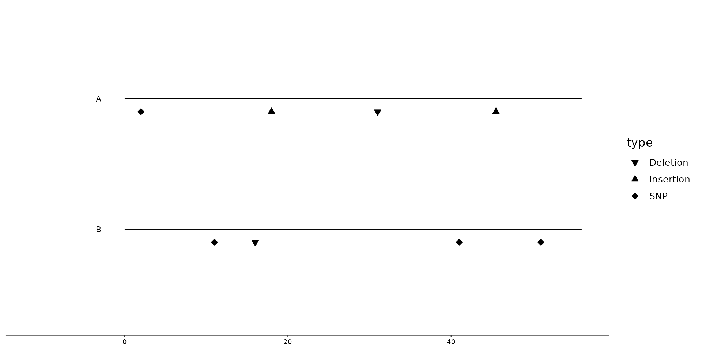
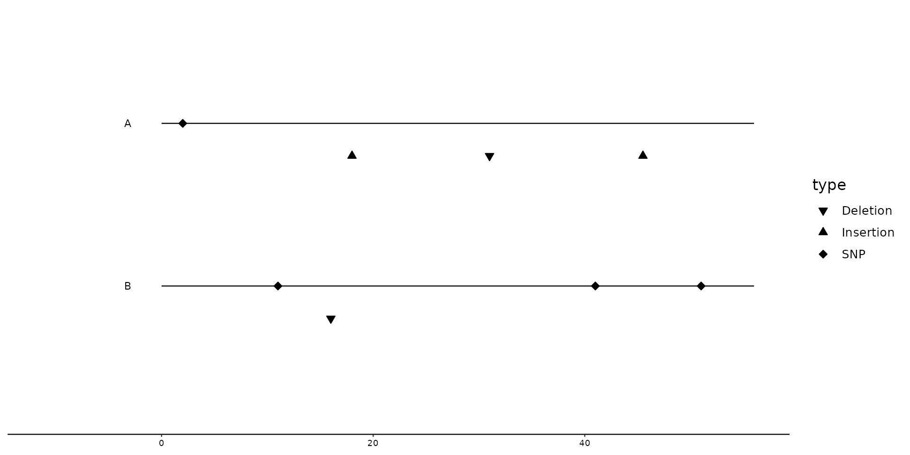
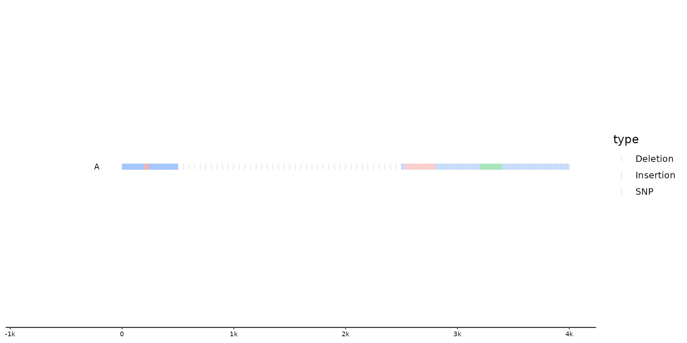
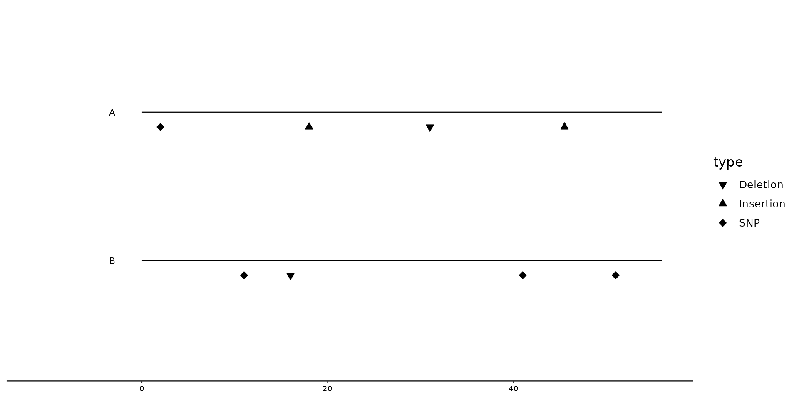
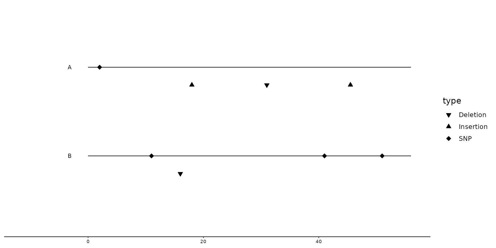
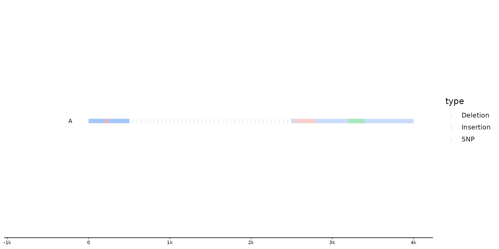

geom_variant allows the user to draw points at locations where a mutation has occured. Data on SNPs, Insertions, Deletions and more (often stored in a variant call format (VCF)) can easily be visualized this way.
geom_variant(
mapping = NULL,
data = feats(),
stat = "identity",
position = "identity",
geom = "variant",
na.rm = FALSE,
show.legend = NA,
inherit.aes = TRUE,
offset = 0,
...
)Arguments
- data
Data from the first feats track is used for this function by default. When several feats tracks are present within the gggenomes track system, make sure that the wanted data is used by calling
data = feats(*df*)within thegeom_variantfunction.- stat
Describes what statistical transformation is used for this layer. By default it uses
"identity", indicating no statistical transformation.- position
Describes how the position of different plotted features are adjusted. By default it uses
"identity", but different position adjustments, such asposition_variant(), ggplot2'"jitter"or"pile"can be used as well.- geom
Describes what geom is called upon by the function for plotting. By default the function uses
"variant", a modified geom_point object. For larger sequences with abundant mutations/variations, it is recommended to use"ticks"(a modified geom_point object with different default shape and alpha, which plots the points as small "ticks"), but in theory any other ggplot2 geom can be called here as well.- offset
Numeric value describing how far the points will be drawn from the base/sequence. By default it is set on
offset = 0.
Details
geom_variant uses ggplot2::geom_point under the hood. As a result, different aesthetics such as alpha, size, color, etc.
can be called upon to modify the data visualization.
#' the function gggenomes::read_feats is able to read VCF files and converts them into a format that is applicable within the gggenomes' track system.
Keep in mind: The function uses data from the feats' track.
Examples
# Creation of example data. (Note: These are mere examples and do not fully resemble data from VCF-files)
## Small example data set
f1 <- tibble(seq_id = c(rep(c("A", "B"), 4)), start = c(1, 10, 15, 15, 30, 40, 40, 50),
end = c(2, 11, 20, 16, 31, 41, 50, 51), length = end-start,
type = c("SNP", "SNP", "Insertion", "Deletion", "Deletion", "SNP", "Insertion", "SNP"),
ALT = c("A", "T", "CAT", ".", ".", "G", "GG", "G"),
REF = c("C", "G", "C", "A", "A", "C", "G", "T"))
s1 <- tibble(seq_id = c("A", "B"), start = c(0, 0), end = c(55, 55), length = end-start)
## larger example data set
f2 <- tibble(seq_id = c(rep("A", 667)),
start = c(seq(from=1, to=500, by =2), seq(from=500, to =2500, by = 50),
seq(from=2500, to = 4000, by=4)), end = start+1, length = end-start,
type = c(rep("SNP", 100), rep("Deletion", 20), rep("SNP", 180), rep("Deletion", 67), rep("SNP", 100), rep("Insertion", 50), rep("SNP", 150)),
ALT = c(sample(x=c("A", "C", "G", "T"), size = 100, replace = TRUE),
rep(".", 20), sample(x=c("A", "C", "G", "T"), size = 180, replace=TRUE),
rep(".", 67), sample(x=c("A", "C", "G", "T"), size = 100, replace=TRUE),
sample(x=c("AA", "AC", "AG", "AT", "CA", "CC", "CG", "CT", "GA", "GC", "GG", "GT", "TA", "TC", "TG", "TT"), size = 50, replace = TRUE),
sample(x=c("A", "C", "G", "T"), size = 150, replace=TRUE)))
# Basic example plot with geom_variant
gggenomes(seqs = s1, feats = f1) +
geom_seq() +
geom_variant()
 # Improving plot elements, by changing shape and adding bin_label
gggenomes(seqs = s1, feats = f1) +
geom_seq() +
geom_variant(aes(shape=type), offset = -0.1) +
scale_shape_variant() +
geom_bin_label()

# Positional adjustment based on type of mutation: position_variant
gggenomes(seqs = s1, feats = f1) +
geom_seq() +
geom_variant(aes(shape=type), position = position_variant(offset = c(Insertion=-0.2, Deletion=-0.2, SNP=0))) +
scale_shape_variant() +
geom_bin_label()

# Plotting larger example data set with Changing default geom to `geom = "ticks"` using positional adjustment based on type (`position_variant`)
gggenomes(feats = f2) +
geom_variant(aes(color = type), geom = "ticks", alpha = 0.4, position = position_variant()) +
geom_bin_label()
#> No seqs provided, inferring seqs from feats
#> Warning: Some mutation types are not mentioned within the offset argument. These types will have an offset of 0 by default

# Changing geom to `"text"`, to plot ALT nucleotides
gggenomes(seqs=s1, feats=f1) +
geom_seq() +
geom_variant(aes(shape=type), offset=-0.1) +
scale_shape_variant() +
geom_variant(aes(label=ALT), geom="text", offset=-0.25) +
geom_bin_label()
#> Warning: Ignoring unknown aesthetics: type
# Improving plot elements, by changing shape and adding bin_label
gggenomes(seqs = s1, feats = f1) +
geom_seq() +
geom_variant(aes(shape=type), offset = -0.1) +
scale_shape_variant() +
geom_bin_label()

# Positional adjustment based on type of mutation: position_variant
gggenomes(seqs = s1, feats = f1) +
geom_seq() +
geom_variant(aes(shape=type), position = position_variant(offset = c(Insertion=-0.2, Deletion=-0.2, SNP=0))) +
scale_shape_variant() +
geom_bin_label()

# Plotting larger example data set with Changing default geom to `geom = "ticks"` using positional adjustment based on type (`position_variant`)
gggenomes(feats = f2) +
geom_variant(aes(color = type), geom = "ticks", alpha = 0.4, position = position_variant()) +
geom_bin_label()
#> No seqs provided, inferring seqs from feats
#> Warning: Some mutation types are not mentioned within the offset argument. These types will have an offset of 0 by default

# Changing geom to `"text"`, to plot ALT nucleotides
gggenomes(seqs=s1, feats=f1) +
geom_seq() +
geom_variant(aes(shape=type), offset=-0.1) +
scale_shape_variant() +
geom_variant(aes(label=ALT), geom="text", offset=-0.25) +
geom_bin_label()
#> Warning: Ignoring unknown aesthetics: type